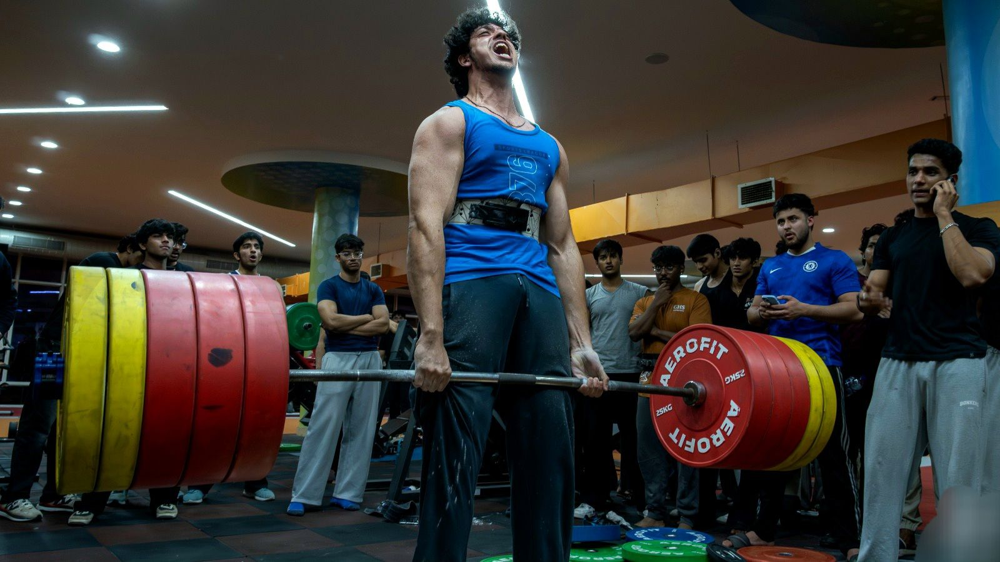
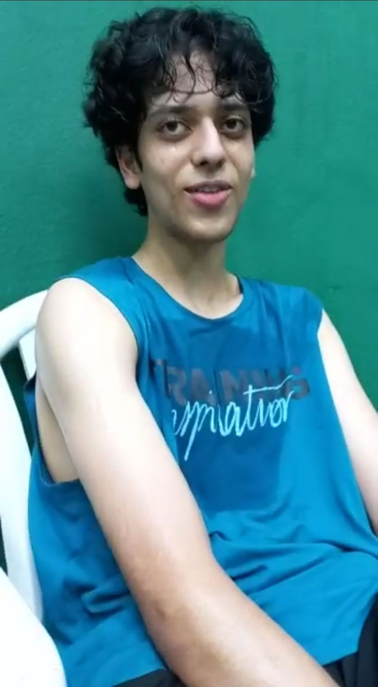
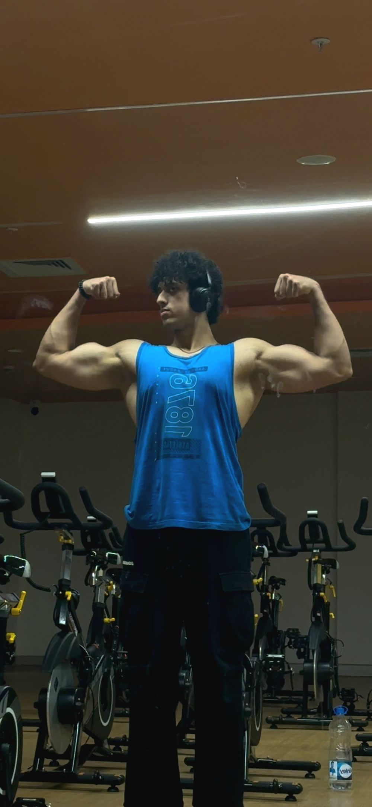
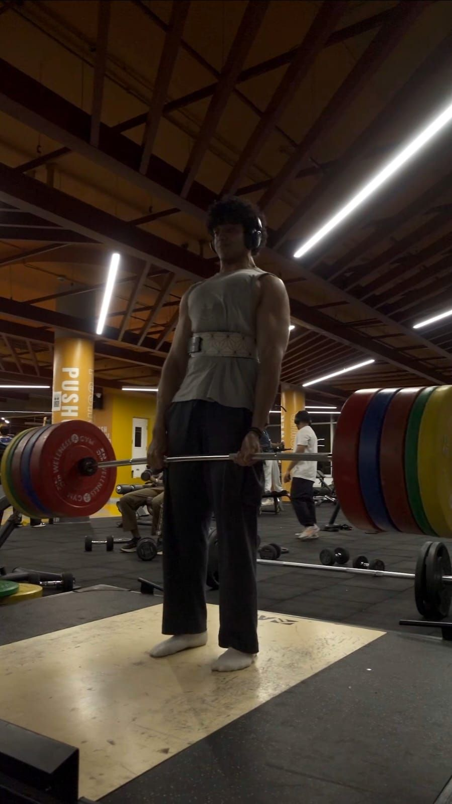
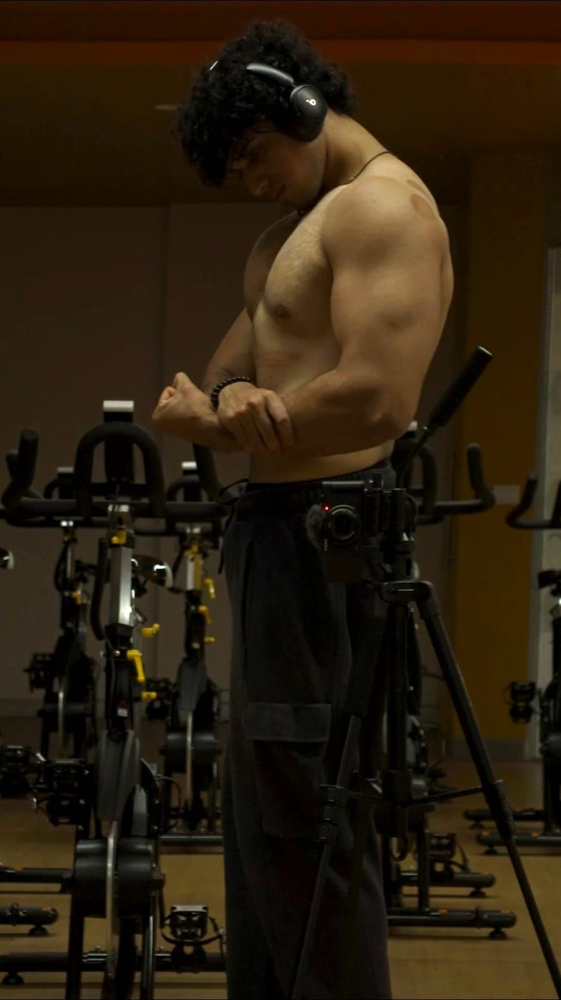
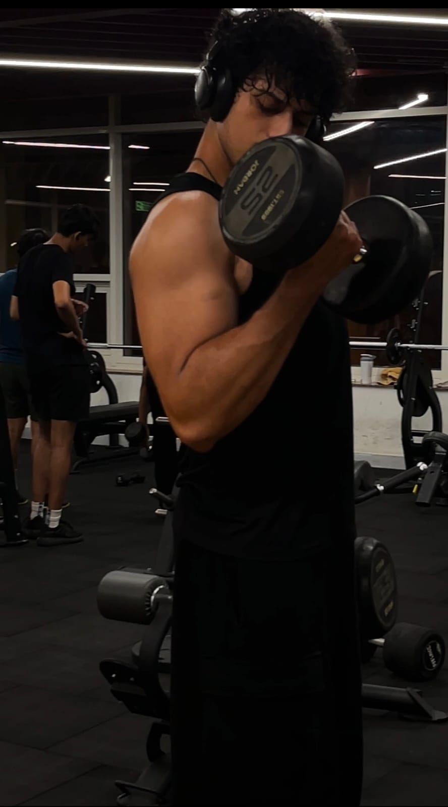
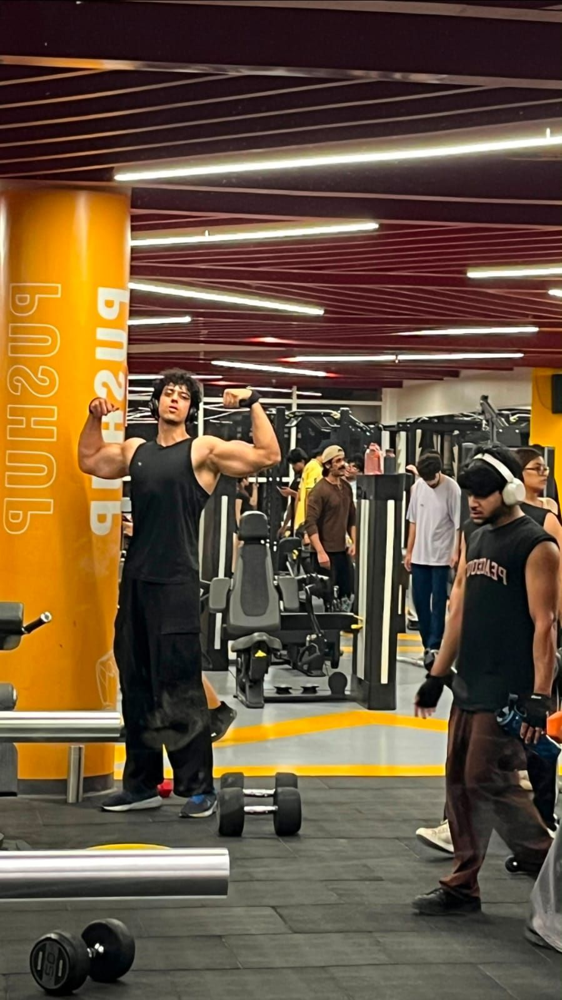
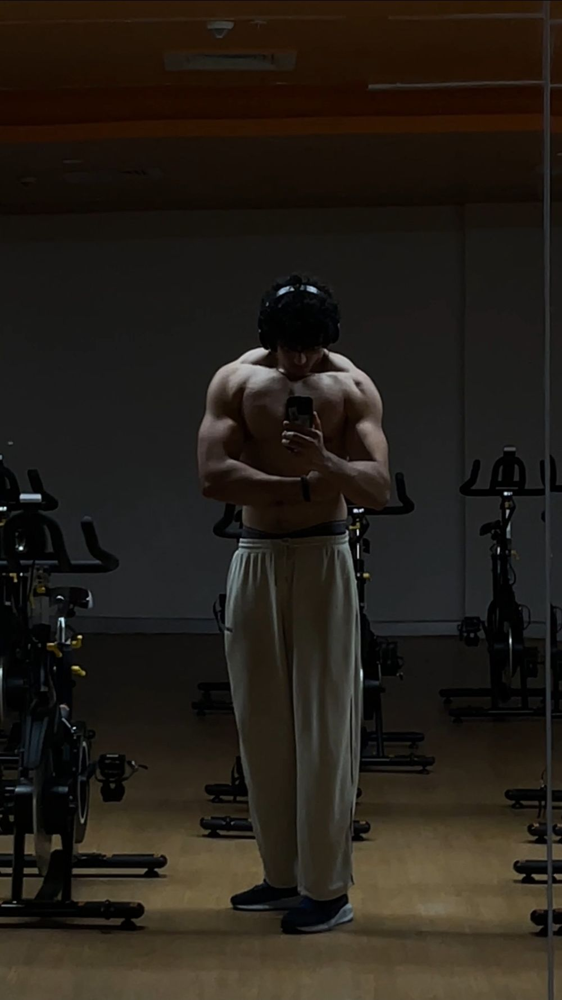

Scroll to load the bar
Drive through the story.
The skinny kid, and what happened next. Thirteen chapters told in roadside boards, a hill that loads the bar, a pond you can dive into. One road, start to finish.
The whole story.
68 became 102.
You're up next.
He figured it out alone, the slow way. You don't have to. Program, form checks, food, weekly check-ins — all for ₹66 a day.
This was mine.
What's yours?
Thirteen chapters, 68 kg to 102, and fifteen kilos still to go. The finish line here is the start line. Before you loop back to chapter 01 — what are you working toward?
Leaving the game.
This opens WhatsApp outside the game, in a separate app or tab. Your drive stays where it is.
Fastest laps
Turn your phone sideways.
Drives best in landscape

Day one · 68kg Now · 102kgThe work.




Everything you need.
- 01
A plan that's actually yours
Your gym, your schedule, your constraints - 02
I check your form on video
Send the clip, get specific corrections - 03
Food you'll actually eat
Built around mess food, veg, student budgets - 04
Weekly check-ins
Progress reviewed, program adjusted - 05
Direct access
You message me, not a support queue
₹1,980 a month. One plan, everything above, no upsell at the end.
- Your own programrewritten every block
- Form checkssend as many as you want
- Food planbuilt on what you already eat
- Weekly check-inevery single week
- WhatsAppstraight to me
The numbers, not the hype.
More on Instagram@swastikk.m ↗Every kilo was earned on the same programming clients train on. Same principles, no shortcuts.swastikk.m · bodyweight, natural
180 squat, 110 bench, 230 deadlift. The heaviest conventional pull at MUJ, on a competition platform.Squat · bench · deadlift total
Coaching is new enough that early clients get direct, daily access while the spots are still open.Limited intake · Jaipur & online

This is not for you if
- ×Abs in 21 days.
- ×Nod, then do curls anyway.
- ×Consistency as a vibe.
- ✓Three days a week, and the truth.
Load the bar.
Two minutes. Mostly taps. Each section adds a plate.
- iApply — two minutes, mostly taps
- iiTalk — I read it, then WhatsApp you
- iiiLift — you do the reps, I do the thinking
Free to apply · Progress saves